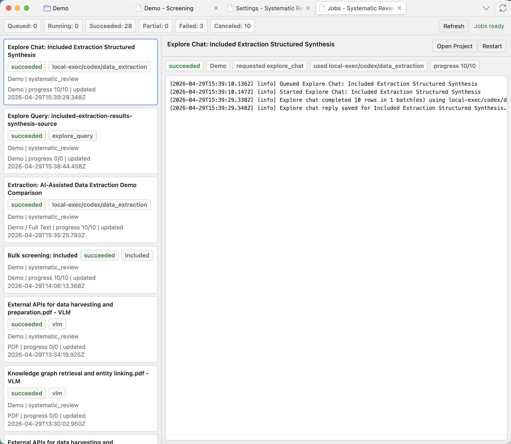

Jobs
Jobs is the place to monitor background work such as exports, conversions, harvest imports, embeddings, extraction, screening exports, and semantic search.

Read the Jobs page
Summary badges
Counts queued, running, succeeded, partial, failed, and canceled work across projects.
Job list
Shows recent jobs with project, kind, status, progress, and update time. Click a job to inspect it.
Selected job details
Shows the selected job status, progress, messages, warnings, and metadata.
Logs
Show what the job did. Read logs when a job failed, stopped early, or produced unexpected output.
Open Project
Opens the project that owns the selected job.
Stop
Requests a safe stop for running work. Some jobs may finish a small current step before stopping.
Continue
Resumes supported partial jobs, such as workflows designed to continue after interruption.
Restart
Queues the selected job again when that job type supports restart.
Refresh
Reloads job statuses and logs after work changes in the background.
Which jobs appear here
Exports, harvest imports, merges, embeddings, semantic searches, extraction runs, PDF/VLM conversion, screening exports, and long agent workflows can all create Jobs entries. If something happens in the background, Jobs is the place to check it.
When a job fails
- Click the failed job and read the detail pane first.
- Check whether the failure is a missing model, unavailable API, invalid setting, interrupted Zotero session, or source-data problem.
- Use Continue only when the job type supports continuing from partial output.
- Use Restart when you want a fresh attempt after correcting the problem.
Jobs are project-aware. If you are unsure which project a job belongs to, use Open Project before making decisions from its log.